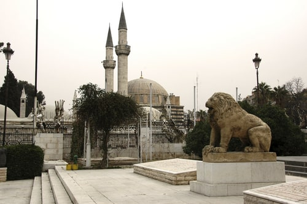
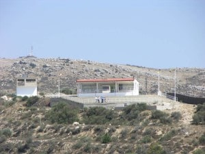

Syria, officially the Syrian Arab Republic, is a country in Western Asia.
It has a total area of 185,180 square km. Damascus is its capital and largest city.
Arabic is its official languages. Its official currency is Syrian pound (SYP).
It is bordered by Turkey, Lebanon, Israel, Iraq, and Jordan. It has high mountains, deserts, and fertile plains.
With the following informational facts about Syria, we’ll explore more about its history, culture, civil war and crises.
Informative facts about Syria for kids
The two stars in the Syrian Flag represent the previous union between Syria and Egypt.Syria is a founding member of the United Nations.The largest lake in Syria, Assad , is actually man-made and has only existed since 1968 (maximum capacity of 11.7 cubic kilometers, the maximum surface area of 610 square kilometers.)

The National Museum of Damascus contains relics and artifacts from every age, starting with the Prehistoric Age and extending to the modern Classical Age.Damascus (commonly known in Syria as ash-Sham), the capital city of Syria, is called the “Jasmine City.” It is one of the oldest continuously inhabited cities in the world.The Assyrian New Year falls on April 1st. Celebrated with the arrival of spring, Kha b-Nisan literally means the first of the month of Nisan.The Shouting Valley is the meeting point of four countries: Syria, Lebanon, Jordan, and Israel. It is an “echo point,” and people often use it to communicate with their relatives on the other side.

The city of Damascus gets its name from Damask, a variety of cotton fabric rich in exquisite patterns.Syria was the largest Arab state to emerge from the ruins of the Ottoman Empire.Syria is currently suspended from the Arab League (suspended on 16 November 2011.)